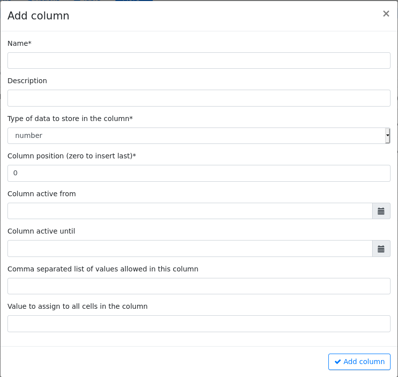
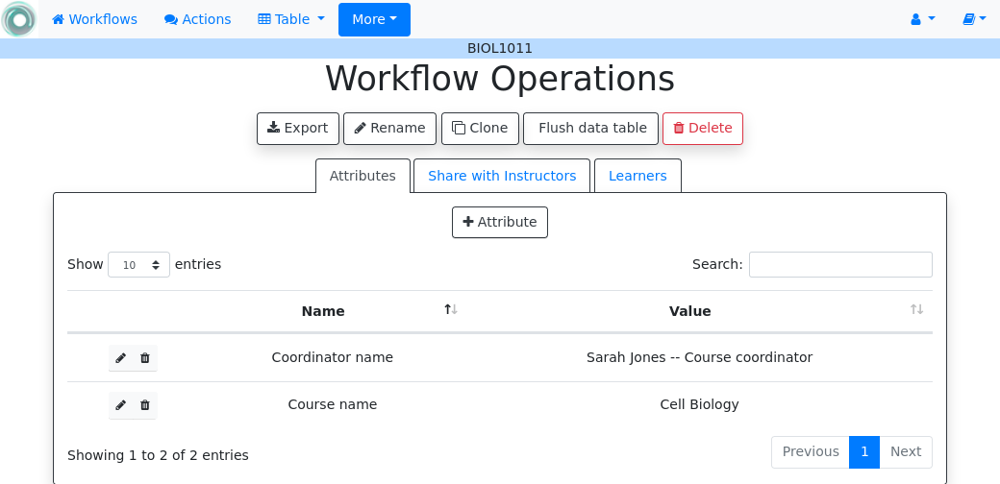
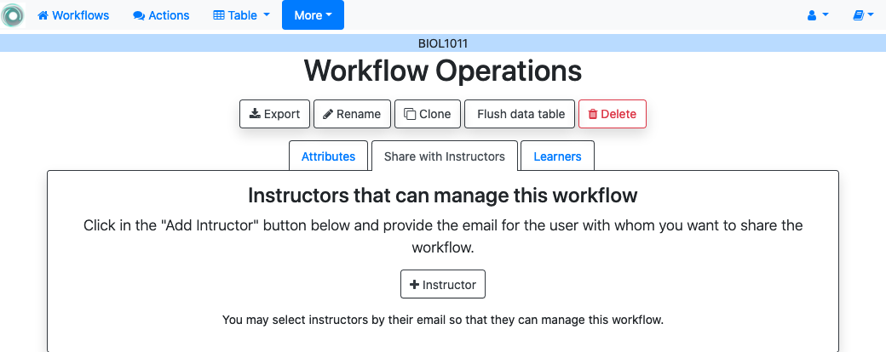
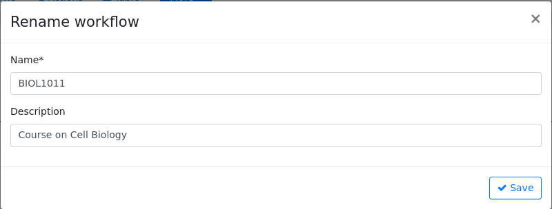
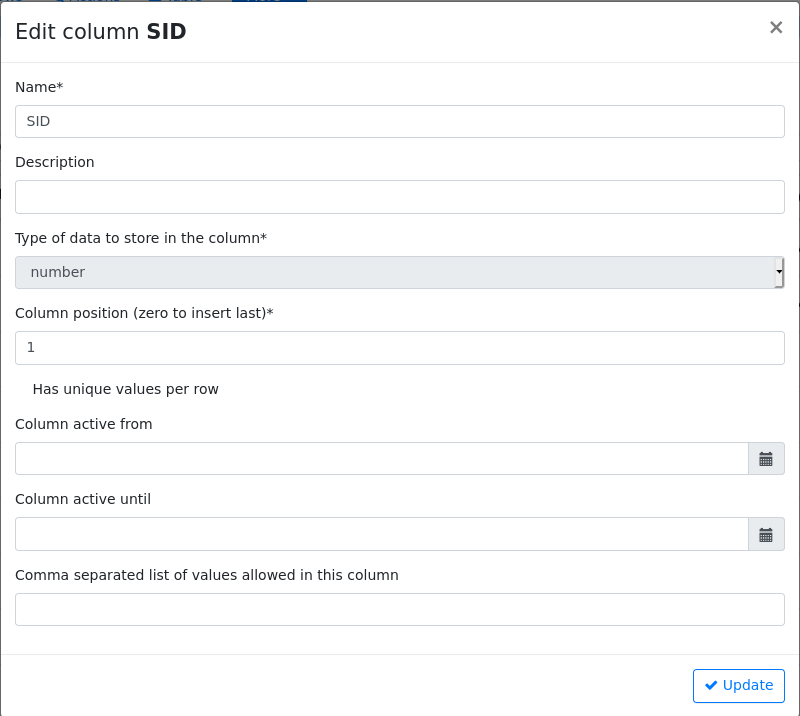
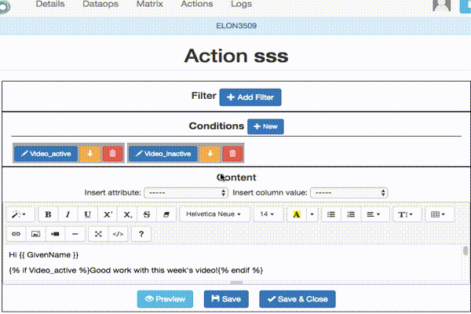

Using the tool¶
Table of Contents
In a nutshell, the idea of OnTask is to help instructors, learners and designers to exchange data about what is happening in a learning experience to design and deploy personalized learner support actions. This last term, personalized support actions is purposefully vague to include any action that is offered to learners in different forms depending on personalized conditions. The typical workflow to use OnTask starts by uploading and combining available data about the learning experience, either provided through some platform (LMS, video platform), provided by the students (questionnaires), or reported by the instructors. The instructors then write simple rules to select a subset of students and create a resource (HTML page, a message, a visualization) so that its content depends on the data available for each learner. The following figure shows an illustration of this workflow:
{kind=link}
Imagine a learning experience in which you want to provide personalized messages to the learners in three instances. In the first week, you want to send a welcome email and change slightly the text based on the student background (courses taken before this one). The second week you want to send some comments and suggestions about the participation in the forum and the text will depend on the measures of engagement obtained from the platform. Finally, you want to send a third personalized email depending on the level of engagement with the videos in the course. The idea of these messages is that you want to change the text in the message for each learner based on the information stored in the table.
The main entity in the platform is a *workflow* and represents a set of data capturing procedures, a table with current data, and a set of actions. The usual steps require first to populate the table with data extracted from the learning environment. In the figure we assume a variety of data sources ranging from those coming from the use of technology, self-reported by the students, or observed and reported by the instructors.
These three sources are combined and stored in the second entity in OnTask: the table. Think of the table as a conventional excel sheet storing the information about the learners (one learner per row and a set of features about each learner as columns).
The third entity in OnTask is the personalized action that is a text with elements that are selected and adapted to each learner based on a set of basic rules that depend on the student features stored in the table. This text can be included in an email, made available through a web page, or forwarded to another system for further processing.
A workflow in OnTask contains a single table (rows and columns) and a set of
actions. This container is conceived to manage the data and actions related
to a learning experience. You may use the workflow shown in the documentation
importing the initial workflow.
The following sections offer a more in-depth description of all these elements as well as examples with real scenarios.
The Workflow¶
“But anyone who has experienced flow knows that the deep enjoyment it provides requires an equal degree of disciplined concentration.” -― Mihaly Csikszentmihalyi
The workflow in OnTask is simply a container that brings together the table, the operations to upload the data, and the actions to create the personalized content. The initial screen in OnTask shows the available workflows as shown in the following figure.

Clicking in the word Workflows in the top menu brings you back to the list of workflows from any page in the application. Clicking in the book icon in the upper right side of the menu bar opens the documentation page.
The screen includes the following operations:
- Create a new workflow: Clicking in the New Workflow button will ask you for the name and description of the element.
Importing a file containing a previously exported workflow. Clicking in the Import button will ask you for the new for the new workflow, the file and will let you choose to import only the data, or the data and the actions as shown in the following figure

Open a workflow to work on it. This is perhaps the most common initial step. Once you open a workflow, all the operations are applied to it. The name of the current workflow is shown right under the top navigation bar as shown in the following figure.
Rename the workflow (change either its name or its description).
Clone a workflow. This operation will create an exact copy of the workflow with a name created by adding the previx Copy_of_ to the current workflow name.
Flush all the data in the workflow. This operation maintains the workflow but it wipes out the data in the table.
Delete the workflow.
{kind=link}
Once you open a workflow, it is locked and no other user can manipulate it (see sharing a workflow). If you access a workflow and another user is currently using it, the platform will not allow you to see the data and will show who is holding the lock.
The operations to manage a workflow all become visible once you select it by clicking on its name.
Workflow Details¶
“The details are not the details. They make the design” – Charles Eames
After selecting a workflow to manage, the details page appears with a lot of information about operations, structure of the data, information about the columns, etc. The page contains the information shown in the following figure.

The name of the workflow is shown at the top of the page. The page includes links to additional menus with various operations on the selected workflow (some of them will be available depending on your user profile). Under the title Workflow Details there are buttons to access the following operations:
- Add a column
- This menu opens three options: create a regular column, create a column combining the values of two existing columns, or create a new column with random values.
- Add a regular column
Opens a dialog to create a new column in the table with the following fields:
- Name (mandatory): column name (shown in the table)
- Description: text that will be shown to the learners if the column is part of a survey action.
- Data type (mandatory: The possible data types are number (representing both integers or real numbers), string, boolean (only possible values are true and false), and datetime (a date and time together).
- An integer (mandatory) representing the position of the column in the table (a value zero will insert it at the end of the table).
- Two date/time values to control the visibility of the column.
- Comma-separated list of possible values. This field is to restrict the values in the column. The values have to be compatible with the specified data type.
- Initial value to assign to all cells in the column.

- Add a formula-derived column
- This column is created by combining the values of existing columns using one of the operations addition, product, maximum, minimum, mean, median, standard deviation, conjunction or disjunction. The formula is only applied when the column is created the current values of the other columns. The column is not refreshed if the operand change in the future.
- Add a column with random values
- This is useful to create columns for A/B testing. The new column is created with a random value from either a numeric range (starting at 0) or a set of strings.
- Attributes
This is simply a dictionary of pairs
(name, value)so that when anameappears in a personalized text, it is replaced by thevalue. The main use of these attributes is when a value has to appear in various locations and you may want to change all its occurrences. For example, the instructor name could be included as one of the attributes so that if it changes, modifying the attribute is the only required step.
- Share
A screen to make the workflow accessible to other users. You are supposed to know the user identification (there is no search functionality available).

- Export
This functionality allows you to take a snapshot of the content of the workflow and store it in a file for your records. You may select which actions are included in the exported file

The menu offers the possibility of exporting only the data, or the data and the action in the workflow.
- Clone
- This function creates a new workflow duplicating the data, actions and conditions of the current workflow. The new workflow will have the same name with the prefix Copy of.
- Rename
This functionality allows to change either the name or the description of the workflow.

- Flush data
This operation deletes all the data attached to the workflow, but preserves the workflow structure (that is, the name and the description only).

Given the destructive nature of this operation the platform requires you to confirm this step.
- Delete
Operation similar to the previous one, but now the whole workflow is deleted and therefore unselected. If executed, the platform will go back to the list of workflows as this one is no longer available for operations.

As in the previous case, the platform asks for confirmation before carrying out the delete operation.
Under the buttons to carry out these workflow operations the platform shows a summary of the information contained in the workflow.
The Columns¶
The data in a workflow is stored in a structure called a table that is made of rows and columns (similar to a spreadsheet). The details page basically shows information about the available columns.

Each column has a position, name (cannot contain the quotes ‘ or “), a type (one of integer, string, double, boolean or date/time), a field stating if the values of that column are unique for the rows, and operations. When a column is marked as Unique, it means that all the values it contains are different and unique for each row. Think of a column containing a passport number. Such number is different for every person. There could be several columns with this property. The application detects automatically this property in a column. You may edit and change this properly as long as the values are the adequate ones (they satisfy the uniqueness property if you try mark a column as unique). The operations available over columns are:
- Edit
It allows you to change the name, type, unique and values allowed in the column. If you are changing the column type, the application will check if the existing values are valid. If not, the change will not be allowed. Similarly, if the Unique property is selected, the application checks the values to make sure this property is satisfied.
The column may also have a validity window defined by two date/times. This validity is used when executing action in tasks.
- Restrict
- Assigns as allowed values for the column those currently stored. This operation is useful to transform a generic column into one with values limited to the current ones.
- Clone
- Clones the column in the workflow changing its name adding the prefix Copy of to the name.
- Delete
- Deletes the column from the workflow. If there are conditions inside actions out that use this column, those conditions will be removed from the action.
- Statistics
- Shows a statistical summary of the values in the column. If the data type is number, the summary includes information about quartiles, a boxplot, and a histogram. For the rest of data types, the summary only includes the histogram.
Data Table¶
“May be stories are are just data without a soul” – Brené Brown
This section describes the operations to upload and merge data into the table. It may be the case that this task is already done, or it is done automatically before you work with a workflow. If this is the case, you may skip this section. The data operations page offers various options to upload and merge data to the table and the process is divided into several steps. This functionality is available from the Details, Table or Actions screens.
Upload/Merge Data¶
This functionality is used to upload new data in to the table, or merge new data with the one already existing in the table. There are three types of operations depending if the data is obtained form a CSV file, an Excel file, or a connection to a remote database.
Upload CSV Files¶
CSV or “comma separated value” files are plain text files in which the first line contains a comma-separated list of column names, and every subsequent line contains the values of these columns for each row. It is a popular format to exchange data that can be represented as a table, and it is for this reason that OnTask allows to upload data in this format.
This operation allows you to upload the values in a CSV file into the workflow table.

In some cases, the comma-separated values are surrounded by several lines that need to be ignored when processing the data. The page to upload the CSV file allows you to specify the number of lines to ignore at the start and end of the file.
Upload Excel Files¶
OnTask also supports the upload of data from Excel files.

In this case the file is assumed to have multiple Sheets and one of them has to be selected to upload the data.
SQL connection¶
The third method to upload data into the current workflow is through a SQL connection to a remote database. These connections have to be previously defined and configured by the system administrator. Instructors can use them to access the content of a previously defined table in a remote database. The option to upload data with a SQL connection shows the available connections and the possibility to Run each one of them:
When running a SQL connection the platform shows the configuration parameters and requests the password to access the remote database (if required).
When uploading data for the first time, the values are prepared to be assigned as the initial content of the table. Before this assignment is done, the platform first automatically detects those columns that have unique values (no repetitions) and marks them as keys. Key columns are very important because the values (as they are different for every row) are used for various operation. There must be at least one key column in the workflow and it is possible to remove the key mark from any column and only possible to mark a column as key if the values are all different. Before assigning the data to the table, the platform also allows to change the name of the columns as shown in the Step 2 of the upload process.
After this step (if the table is empty), the data is stored and the platform shows the Workflow Details page. If the upload operation is executed with a workflow with existing data in the table, then instead of an upload, the platform executes a merge operation.
Data Merge¶
A merge operation is required when uploading a set of columns with an already existing table. This operation is very common in data science contexts. One of the problems is to specify how the values in the columns are matched with respect to the ones already existing in the table. In other words, each new column has a set of values, but they need to be in the right order so that the information is matched appropriately for every row. The solution for this problem is to include in both the existing table and the new data being merged a unique or key column. These columns have the property that uniquely distinguish each row with a value and therefore they are used to make sure that rows with matching values in these columns are merged. When uploading data into a workflow that already contains data in its table, the platform automatically executes additional steps to complete a merge operation.
After detecting the key columns and offering the option of changing their names, the following steps requires to identify the key columns used to match rows from the existing table and the one being uploaded.
{kind=link}
- Key columns
- You have to select a key column present in the table to be merged (mandatory) and a key column from the existing table (mandatory).
- Merge method
- Once you choose a merge method, a figure and explanation appear below.There are four possible merging methods:
- Select only the rows with keys in both existing and new table
It will select only the rows for which values in both key columns are present. Or in other words, any row for which there is no value in either of the key columns will be dropped.

- Select all rows in either the existing or new table
All rows in both tables will be considered. You have to be careful with this option because it may produce columns that are no longer unique as a result.

- Select the rows with keys in the existing table
Only the rows in the new table with a value in the key column that is present in the existing table will be considered, the rest will be dropped.

- Select the rows with keys in the new table
Only the rows in the existing table with a value in the key column that is present in the key column from the new table will be considered, the rest will be dropped.

In any of these variants, for those columns that are present in both the existing table and the new table, the values of the second will update the existing ones. This updating operation may introduce non-values in some of the columns. You have to take extra care when performing this operation as it may destroy part of the existing data. In the extreme case, if you try to merge a table with a key column with no values in common with the existing key and you select the method that considers rows with keys in both the existing and new table, the result is an empty table.
After selecting these parameters the last step is to review the effect of the operation and proceed with the merge as shown in the following figure.
The Table¶
“You’re here because you know something. What you know you can’t explain, but you feel it” – Morpheus, The Matrix
This functionality is to show the values stored in the workflow. Since this data can be arbitrarily large, it is likely that only a portion of the columns is shown on the screen at any given point.
{kind=link}
The buttons at the top of the page allow to execute several operations.

- Add row
- A form appears with as many fields as columns to introduce a new row in the table.
- Add column
- See Adding a column
- Add derived column
- See Adding a formula-derived column
- Dashboard
- The dashboard is a page that shows a statistical summary for the columns shown in the table. This number may be too high, so you should consider using Table Views to simplify the information shown.
- CSV Download
- This functionality allows to obtain a CSV file with the data shown on the screen. Combine this functionality wit the Table Views to handle large tables.
The rows shown in the screen are automatically grouped into pages (you may choose the number of entries per page in the upper left side of the table). Additionally, the table offers a search box in the the upper left corner. The operations in the left side of the row allow you to access a statistical summary of the values in the row, edit any of the values or delete the row.
Table Views¶
Due to the potentially large size of this table in either number of rows or columns, OnTask offers the possibility to define views. A view is simply a table that shows a subset of columns and rows. You may define as many views as needed for the table.
{kind=link}
When creating or editing the content of the view, aside from the name and the description, you may select those columns to show, and a expression to restrict the rows to those for which that expression is correct (you may leave this expression empty and all rows will be shown).
{kind=link}
Once defined, you may select the view to show the corresponding data subset.
{kind=link}
The Dashboard and CSV Download buttons, when used while using a view, will apply to the selected data subset.
The Actions¶
“In order to carry a positive action we must develop here a positive vision” – Dalai Lama
This is the most important functionality of the platform. Actions are used exchange information with the learners, either offering a personalized document, or requesting data. A workflow contains an arbitrary number of actions shown in the Table page.
{kind=link}
Each action is identified by a name (unique) and an optional description. OnTask currently offers the following types of actions: personalized text, personalized JSON, and surveys. The action table shows also the operations available for each of them (right most column in the table shown in the previous figure).
Personalized Content¶
These actions allow to create a resource (similar to a HTML page) and mark certain elements with conditions that will control if they are included or ignored when showing the document. Think of this personalized content as a resource (message, tip, comment) you would offer learners but with content that is different depending on the data stored in the table. You may have several of these items prepared to be used at different points during the experience. The personalized content action is manipulated with the screen shown in the following figure:
{kind=link}
Before describing in detail the structure of this screen let’s explore the concept of condition. A condition is an expression that when evaluated will either be True or False. These expressions are commonly used in other applications such as spreadsheets or programming languages. The following image shows an example of this condition.

The expression in the previous figure is contained under the title Formula and can be read as:
Video_1_W4 = 0 or Video_2_W4 = 0
The first element of the expression is the sub-expression Video_1_W4 = 0
which contains the variable Video_1_W4, the equal sign, and the constant
zero. The second element is a sub-expression with the variable
Video_2_W4, the equal sign, and the constant 0. These two
sub-expresssions are connected through the OR operator, which means
that the expression will be True if either of the sub-expressions are
True, and False in any other case. When evaluating this expression,
the variables are replaced by concrete values (numbers). For example, if
Video_1_W4 is replaced by 3, and Video_2_W4 is replaced by 4, the
evaluation will transform the expression into \(3 = 0 or 4 = 0\). The
sub-expression \(3 = 0\) is clearly False and so is the other
sub-expression \(4 = 0\). This means the initial expression is False.
result is either True or False. Another possible evaluation is if
Video_1_W4 is equal to zero (and Video_2_W4 remains equal to 4). In
this case the resulting expression is \(0 = 0 or 4 = 0\). In this case,
the first sub-expression is True, and although the second is False,
only one is needed for the overall expression to be True.
These conditions can have nested sub-expressions and get complex fairly quickly. However, the underlying mechanism to evaluate them remains the same: replace variables with values and decide the result (True or False). OnTask relies on these expressions to personalize the content of the actions. Let’s now go back to the screen to edit an action. The area has four components
- The filter
The top area contains a filter. This element is an expression used to decide which learners (or more precisely, the corresponding rowsin the data table that) will be selected and used in this action.
In the example above, the expression selects 3 out of all 14 learners in the data table. This filter is useful when you want to provide the personalized text to a sub-set of the learners. For example, you may want to send a reminder about the submission deadline the day before but only to those students that haven’t connected to the system. If you have that informatio in a column of the data table, you may create the condition that selects only those learners.
- The conditions
This area contains additional expressions called conditions.

A condition is another expression (identical to the filter) but it will be used in the middle of the text to decide if a portion of the text will be shown or ignored. The buttons in the screen allow you to edit the expression, insert the condition to control the appearance of text in the editor (below), clone the condition, or delete it from the action.
For each condition, the button shows the number of learners for which the expression in that condition evaluates to True. If this value is zero, it means that any text you include in the editor surrounded by this condition will not appear for any of the learners.
- The HTML text editor
This is the area to create the personalized document. It is a conventional HTML editor offering the usual functionalities (inserting text in various forms, headings, lists, links, images, etc.) Right above the editor window you have two choice menus that you can use to insert either a workflow attribute or a column name that will be replaced by the corresponding value.

- The Preview button
The Preview button shows how the text in the editor is shown for those learners selected by the filter (if any). After clicking in the button you will see a window with the resulting text. If there are any elements in the text that are controlled by any condition, the bottom area will show their values.
Use the arrow buttons to see all the different versions of the text depending on the values stored in the table for each learner.
- The Save button
- This button saves the content of the text editor and returns to the page showing all the actions in the workflow.
{kind=link}
{kind=link}
Using column values, attributes and conditions in a Personalized Text¶
The text in these actions may include three types of elements that are personalized for each learner: an attribute name, a column name or a portion of text marked with a condition.
- Attributes
Attributes are simply synonyms that you may want to use in more than one action. For example, if you have several actions that include the name of a course, instead of including that name if all actions, you may define an attribute with name course name and value Biology 101 and include in the actions the attribute name. OnTask will replace that attribute with its value when showing the text to the learners. If you then change the name of the course (or you export this workflow and import it to be used in anotehr course), you only need to change the attribute and the name of the course will appear correctly in all actions (in what is called a single point of change).
To insert an attribute name in the text simply place the cursor in the editor where you want the value of that attribute to appear and select the attribute from the area above the editor. The name of the attribute will be inserted in the text surrounded by double curly braces, (for example
{{ course_name }}. Only the attributes you previously created in the details page are available.- Column names
- The other element that can be personalized is a column name. For example,
suppose you have a column in your table with the first name of the learners.
You can use the column name to personalize the greeting in the text.
To insert a column name, you follow the same steps used for the attribute but
this time you select the column name from the pull-down menu. You will see
that the name of the column appears in the text also surrounded by
double curly braces (for example
Hi {{ GivenName }}. The double curly braces is the way OnTask has to mark that text to be personalized or replaced by the corresponding value for each learner extracted from the data table. - Conditional text
Using a condition to control if a portion of the text is shown or ignored is slightly different. First highlight the text you want to appear depending on the condition in the editor. Then go to the corresponding button for the condition, click in the arrow next to its name, and select Insert in text. The text will be surrounded by two marks. For example if the condition name is
Video_active, the text you highlighted will appear in the editor afer clicking in the Insert in text as:{% if Video_active %}Good work with this week's video{% endif %}
This format marks the message Good work with this week’s video to appear only for those learners for which the condition
Video_activeevaluates to True with their current values in the data table. Otherwise, the text will be ignored. The following figure illustrates this process.
{kind=link}
Previewing the content of an Action Out¶
Once a text is created, you need to verify that all the elements are properly
visualized for each of the rows. This is the purpose of the Preview
button at the bottom of the page.

Sending personalized emails¶
Once you created a personalized text action and verified its content using the Preview button, save its content. The right-most column shows a button with name Email. Click on that button.
The following screen shows a form to introduce the required parameters to send the personalized text to each learner by email.

- The subject
- A line to be included as subject of all the emails.
- The column with the email address
- OnTask needs to know where to send the email. It assumes that you have a column containing that information for each learner and it needs you to select that column.
- List of emails in CC
- A comma-separated list of emails to include in the carbon copy or CC email field.
- List of emails in BCC
- A comma-separated list of emails to include in the blind carbon copy or BCC email field.
- Send a summary message
- If you select this option OnTask will send you an email with the summary of this operation (number of rows in the table that were selected by the filter, number of emails sent, date/time of the operation, etc.
- Track email reading
- Include in the messages a HTML snipped to detect if the email is read. OnTask adds an extra column to the table to store the number of times the message is opened. This detection relies on how the email client opens the message and processes the included images, therefore, the information in this column may not accurately reflect this information.
- Snapshot of the workflow
- If you select this option, after the emails are sent, the platform returns you a file that contains a snapshot (picture) of the workflow. It basically freezes the content of the workflow and places it in a file given to you. You may take this file and import back the workflow. In this new workflow you can check the values and messages at the time the operation was executed.
- Check/exclude emails
- If selected, this option inserts an extra step in which you can eliminate certain emails form the action. This feature is useful to remove certain emails that cannot be removed with the filter.
Making personalized content available to learners¶
Sending a personalized email is just one possible way to make this content
available to learner. Another one is to offer the content
through a URL that can be given to the learners. To enable such URL click in
the button labeled URL followed by either the word (Off) or (On).
The following window shows the URL in which the content is available as well as the field to enable/disable it.
{kind=link}
In order for the learners to be able to view their personalized content, they have to be users of the OnTask platform. This functionality is conceived for a context in which OnTask authenticates users either through a corporate Single-sign on layer, or learners access the OnTask through the Learning Management System with a LTI interface (see Authentication).
Surveys¶
The personalized text actions described in the previous section is information made available to the learners. The survey actions collect information from the learners and store it in the table. This functionality is a simplified version of other survey engines such as Google Forms, SurveyMonkey or Quantrix. In a learning context a survey can be used equally to ask students to submit certain data, or for an instructor to collect annotations about learners throughout the experience.
When you edit a survey action, the editor contains the elements shown in the following figure:
{kind=link}
From top to botton, the first area in the screen is a filter to restrict the learners in the table considered for data entry. This functionality is identical to the one described for the personalized text. Those learners for which the condition in the filter is true, area considered for data entry. The second area is text that will be shown at the top of the page requesting the data. The next section is they key column used to match the data entry with the user authentication, typically the column that contains the user email. The last section of the screen is a set of non-key table columns, each one of them corresponding to one question in the survey. If a column is included in the survey, its description text is shown as the question text. The Preview button at the bottom of the page shows the content as it will be shown to the learners.
Running a survey action¶
After creating a survey action there are two operations available represented by the buttons with labels Run and URL. The Run is intended for the instructors to enter the data for each learner. After clicking the link, the platform shows a table with the learners considered for the survey action as well as the data collected so far. Each row contains a link to access the data entry screen. The table has a search box in the upper left corner to quickly find a person.
{kind=link}
Instructors may click in the link available in the right-most column to either enter new information or modify the already existing information for that learner.
{kind=link}
After entering the information the list of students for which the data entry is still allowed.
Offering the survey to the learners¶
The second operation available for survey actions is to make available the URL to learners so that theyindividually enter the information themselves. In the action table each survey action has a button labeled URL. If you click in this button the screen shows the URL for the survey and the possibility of enable/disable it or even provide a date/time window for its availability.

Once enabled, you may send the URL to the students (you may even use a personalized text action for that). Once the students click in the action, after authenticaiton, and if their email is part of hte table, they will be able to enter the information and the values are automatically stored in the right row and column in the table.
These survey actions are ideal to collect information about any aspect of a course in a way that is centralized and available for further processing through personalized text actions. For example, users may choose from a pre-defined set of topics those that were more challenging. This information can then be used in a personalized text action to provide the adequate resources to each learner.
The Scheduler¶
“I have no regular schedule. I get up whenever I can.” – Jimmy Wales
The personalized text actions sending emails can be scheduled to execute at some point in the future. The Schedule operation for these actions opens a dialog like the one shown in the following figure:

- Name
- A name to identify this scheduling (a user may have several of these actions pending in a workflow)
- Description
- A brief description explaining this scheduled action.
- Column containing email
- The column in the table used to fill out the destination email. OnTask will check that the data in that column has the right format.
- When to execute the action
- A date/time in the future when the action will be executed.
- Email subject
- The text to be included in the email subjects.
- Comma separated list of CC emails
- A comma separated list of emails to include in the carbon copy (or CC) field of the email.
- Comma separated list of BCC emails
- A comma separated list of emails to include in the blind carbon copy (or BCC) field of the email.
- Send confirmation email
- Select this option if you want a confirmation email sent to you.
- Track when emails are read
- Include in the messages a HTML snipped to detect if the email is read. OnTask adds an extra column to the table to store the number of times the message is opened. This detection relies on how the email client opens the message and processes the included images, therefore, the information in this column may not accurately reflect this information.
- Check/exclude emails
- If selected, this option inserts an extra step in which you can eliminate certain emails form the action. This feature is useful to remove certain emails that cannot be removed with the filter.
The Schedule in the top menu shows the page with the scheduled tasks for the current workflow. The left-most column offers the operations to edit or delete the scheduled execution.
The Logs¶
The platform keeps a log of most of the operations that are executed when managing a workflow. These records are available through the Logs link in the navigation bar at the top of the screen.
You may review the events and download them as a CSV file.
Plugins – Transforming the data with your own code¶
The additional method offered by OnTask to manipulate the data in a workflow’s table is to execute arbitrary Python code encapsulated as a Python module and placed in a predefined folder in the computer hosting the server. In the context of the platform, these Python modules are called Plugins and require some previous configuration. Before their execution, a plugin must be written and installed in the folder previously considered for that purpose.
The purpose of the plugins is to allow arbitrary transformations of the data attached to a workflow. The list of plugins available for execution can be accessed through the link Transform in the Dataops top menu item.
Each plugin is shown with a (unique) name, a description, the last time the code was modified (based on the file modification time), if the plugin is ready to execute, and the link for either the Run operation, or a link to the diagnostics if the execution is not possible.
The plugin execution request shows a form to collect the parameters required for the operation.
- Input columns
- The columns from the data table that will be passed to the plugin. The plugin can define a set of fixed column names to extract. If this list is empty, the list is requested from the user.
- Key column for merging
- The plugins are supposed to create additional columns, and they need to be merged with the existing data. For this procedure, a key-column is needed to make sure the rows of the newly created data are correctly stored. They key column from the current data frame is added as part of the input data frame passed to the plugin.
- Output column names
- The plugins defines the names of the result columns. However, the upon execution, the user may rename any of those columns.
- Suffix to add to the result columns
- This field is provided to do a one-place renaming. If given, this suffix is added to the names of all output columns.
- Execution parameters
- This part of the form requests the pairs (name, value) as defined by the plugin.
After the appropriate data is provided the tool shows a plugin executing report showing the columns that will be created and how will they be merged with the existing data.
Plugin requirements¶
The Python modules installed in the predefined folder need to satisfy various requirements to be considered for execution within OnTask. More precisely, the file __init__.py must contain:
- Module variable
class_namewith the name of the class in the file that contains the required definitions.
- Class field
namewith the plugin name to show to the users. - Class field
escription_txtwith a string with the detailed description of what the plugin does
3. Class field input_column_names with a potentially empty list of column names
(strings). If the list is empty, the columns are selected by the user at
execution time.
4. Class field output_column_names with a non empty list of names (strings) of the
columns to be used for the output of the transformation.
5. Class field parameters with an optionally empty list with tuples with the following
structure:
('name', type, [list of allowed values], initial value, help_text)These elements will be requested from the user before executing the plugin through a form. The conditions on these values are:
- name must be a string
- type must be a string equal to “integer”, “double”, “string”, “datetime” or “boolean”.
- The list of values is to restrict the possible values
- The initial value must be of the type specified by the second element.
- Help_text a string to show as help text
Class method
runthat receives:- a pandas data frame with the data to process
- a string with the name of the key column that will be used to merge the result.
- A dictionary of pairs (name, value) with the parameters described in the previous element.
an d returns a result Pandas data frame. This frame must have one column with the key column name provided so that it can be properly merged with the existing data.
If a plugin does not comply with these properties the platform shows a summary of these checks to diagnose the problem.